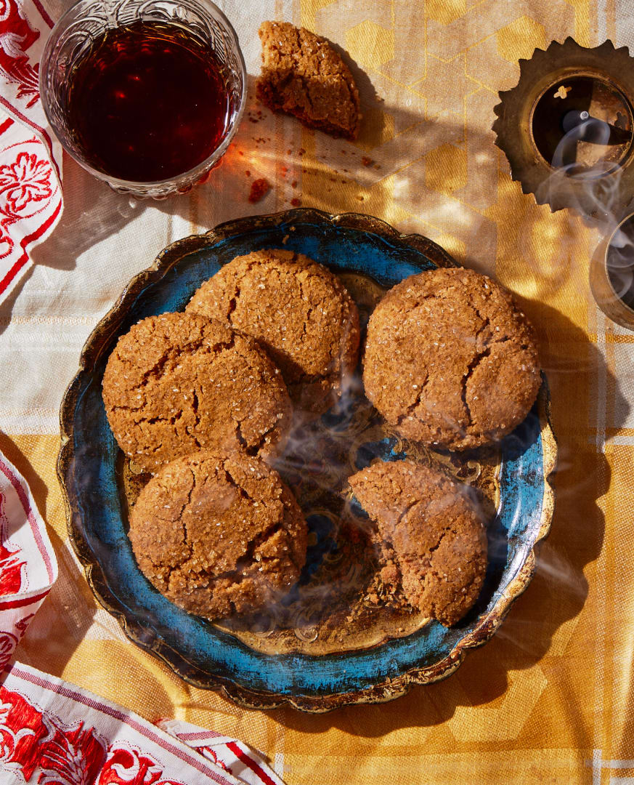

Lord Eshteross’ Maple Ginger Cookies with Turmeric

This is a fun recipe because it comes from the massively popular D&D show, Critical Role! Lord Eshteross is a recurring character works with the party a lot while baking on the side. This is a recipe they released in their cookbook that guides us through making Eshteross' favorite cookie recipe.
Equipment
- Handmixer(optinoal)
- Baking sheet
Ingredients
- 3 cups / 420g all-purpose flour
- 2 teaspoons baking soda
- 2 teaspoons ground cinnamon
- 2 teaspoons ground ginger
- 1⁄2 teaspoon ground turmeric
- 1⁄4 teaspoon kosher salt
- 11⁄4 cups / 250g packed light brown sugar
- 3⁄4 cup (11⁄2 sticks) / 165g unsalted butter, at room temperature
- 1 large egg, at room temperature
- 1⁄3 cup / 80ml maple syrup
- 1⁄2 cup / 100g turbinado sugar
Instructions
- In a medium mixing bowl, whisk together the flour, baking soda, cinnamon, ginger, turmeric, and salt.
- In the bowl of a stand mixer fitted with the paddle attachment, combine the butter and brown sugar. (Alternatively, use a large mixing bowl and electric handheld mixer.) Beat on medium speed, scraping the sides of the bowl halfway through, until smooth and fluffy, 2 to 3 minutes.
- Turn the mixer off and add the egg and maple syrup. Mix on medium speed until fluffy and lightened in color, 2 to 3 minutes.
- With the mixer running on low speed, gradually add the flour mixture, beating just until combined and a soft dough forms, 1 to 2 minutes. Wrap the mixing bowl in plastic wrap and refrigerate for at least 2 hours and up to overnight.
- Set 2 oven racks at the upper-middle and lower-middle positions and preheat the oven to 350°F / 175°C. Line 3 baking sheets (or as many as you have) with parchment paper or nonstick baking mats. Place the turbinado sugar in a medium mixing bowl.
- Using a 1 1/2-inch / 4cm cookie scoop (or 2 rounded tablespoons), portion out the dough and roll into balls. Roll the balls in the turbinado sugar and place at least 3 inches / 7.5cm apart on the prepared baking sheets (6 per tray).
- Bake two pans at the same time, swapping the top sheet to the bottom rack and bottom sheet to the top midway through baking, until the tops crack and the cookies are lightly browned around the edges, 13 to 14 minutes. Bake the remaining tray on either rack. (If reusing one of the baking sheets, let it cool for at least 15 minutes before reusing.) Let cool completely on the baking sheets.